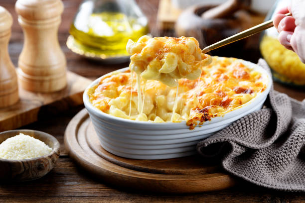

Macaroni And Cheese

Description
Ingredients
- 1-lb elbow macaroni
- 8-oz white cheddar freshly grated
- 8-oz sharp cheddar freshly grated
- 8-oz cheddar
- 8-oz gouda freshly grated
- 4-oz cream cheese
- 3-cups heavy cream
- 1-cup whole milk
- 2-teaspoon white pepper
- 2-teaspoon salt
- 2-teaspoon garlic powder
- 2-teaspoon onion powder
- 2-teaspoon paprika
Steps
- Preheat your oven to 180 degrees
- Boil the macaroni in a large pot of salted water until slightly undone. Drain the water, and rinse with cold water, and set aside;
- In a saucepan over low heat, combine heavy cream, whole milk, cream cheese, white pepper, salt, garlic powder, onion powder, and paprika. Simmer gently, stirring until the cream cheese melts and the mixture is smooth, do not bring to full boil. Set aside;
- Using the same pot you boiled the pasta in, melt the butter over medium heat. Add the shallot and saute for 3-5 minutes until softened. Add minced garlic, cooking for 30 seconds - 1 minute until fragrant.
- Sprinkle in the flour, stirring continuously to form a roux. Cook for 2-3 minutes until it turns a golden hue and smells nutty.
- Slowly pour the warm cream mixture into the roux, whisking until smooth. Lower the heat, and add the cheeses (white cheddar, sharp cheddar, and gouda) a handful at a time, stirring until each batch melts completely.
- Fold the cooked macaroni into the cheese sauce, stirring gently until the pasta is evenly coated.
- In a baking dish, add half of the macaroni and cheese. Sprinkle 4 oz of freshly grated cheddar over the first layer. Top with the remaining macaroni and cheese, the sprinkle the remaining 4 oz of freshly grated cheddar on top.
- Bake for 10 minutes until golden and bubbling.
Home